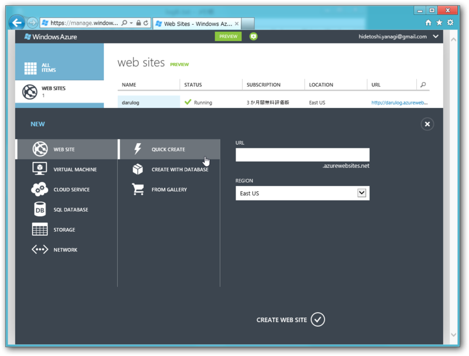
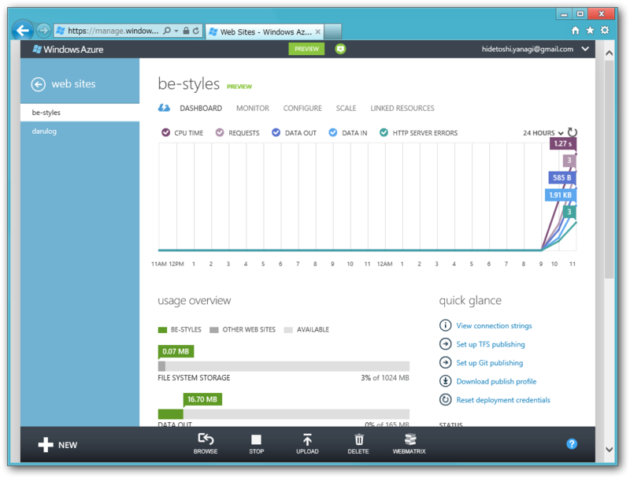
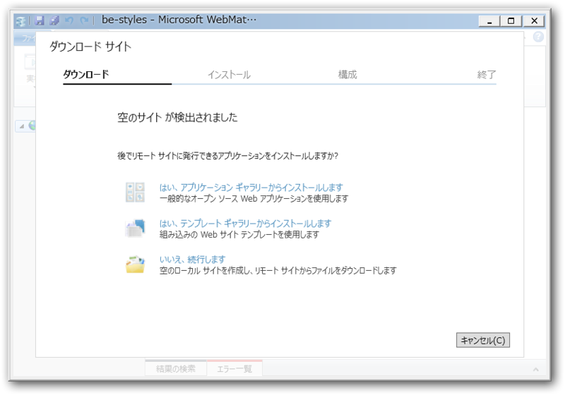
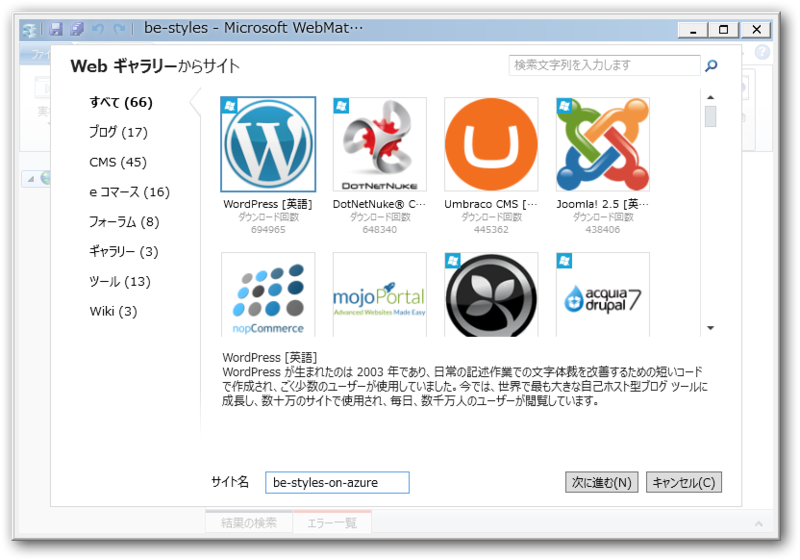
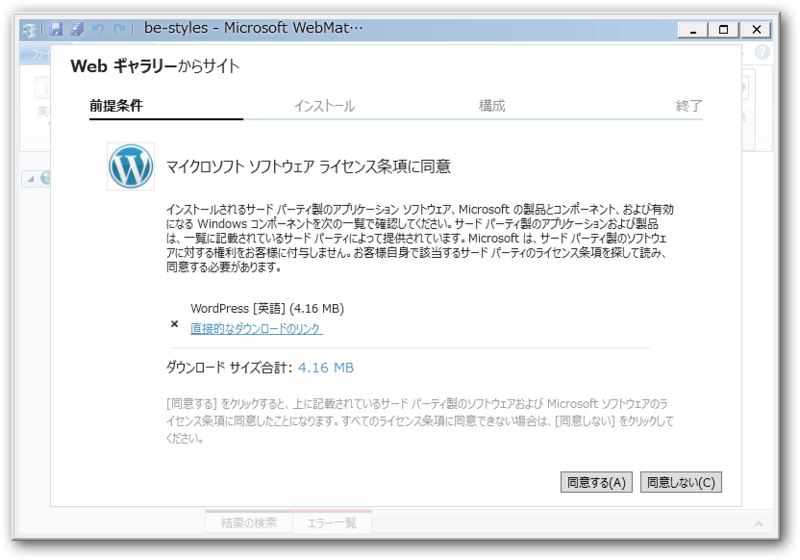
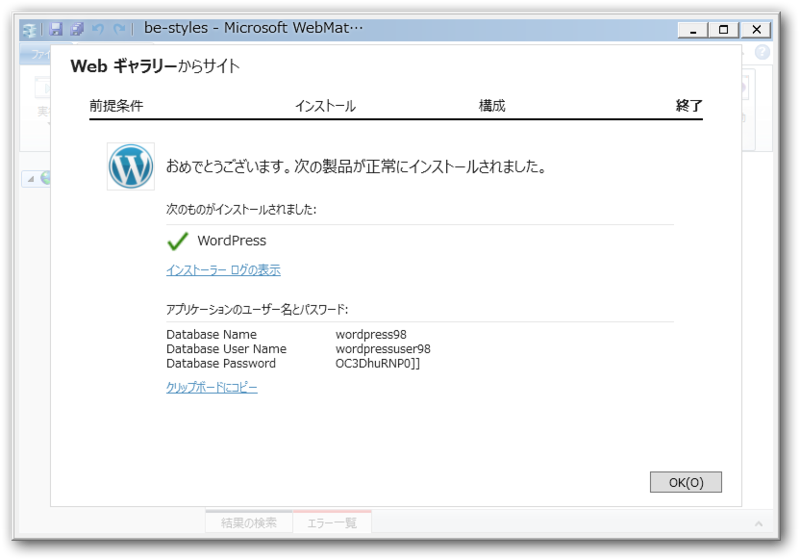
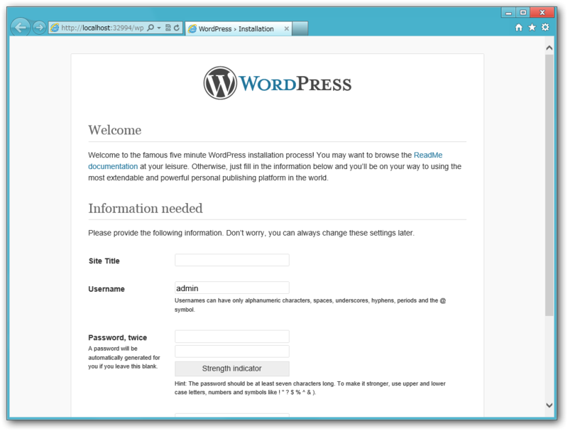
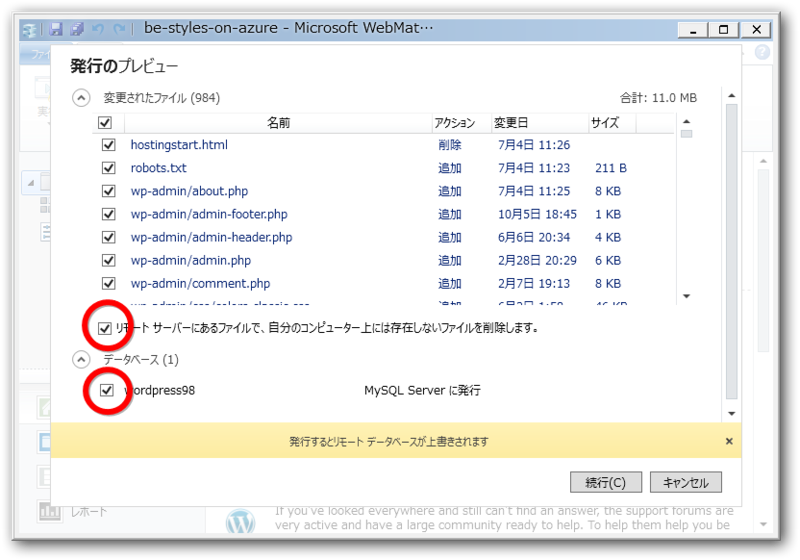
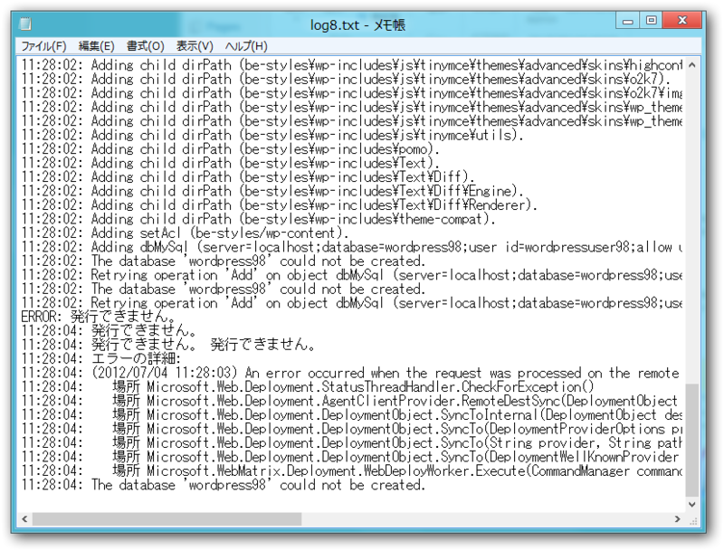
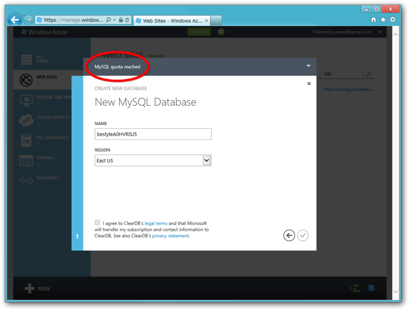

Windows Azure Web Sites と WebMatrix 2 の組み合わせはマーベラス！（2）
公開日：
Windows Azure Web Sites と WebMatrix 2 の組み合わせはマーベラス！ - だるろぐ では、
Azure で WordPress を導入した Web サイトを作成 → WebMatrix 2 でローカルにダウンロード → ごにょごにょして Azure へデプロイ
という方法をとったけど、
Azure で空の Web サイトを作成 → WebMatrix 2 でローカルにダウンロード → WordPress をインストールしてごにょごにょして Azure へデプロイ
ということも可能らしい。 #GoAzure に行ってきました！ - だるろぐ ではそうしてた気がする。
とういうことで、やってみた。
Windows Azure Web サイトの作成

Quick Create で新規 Web サイトを作成。

右下にある［WebMatrix］ボタンを押すと、「WebMatrix 2」が起動して Azure 上の Web サイトがローカルにダウンロードされる。初回はコネクターアプリをインストールする必要があると思う。
WebMatrix 2 で WordPress のインストール

「空のサイトやで！」と言われるので……

WordPress をインストールする。何回も言わしてもらうけど、めっさ簡単やから。

インストール完了！

一度実行して、初回設定を済ましておこう。ついでに最新版へのアップデートもやっておく。
Windows Azure Web サイトへデプロイ

それを次は Azure へ発行！ サーバー上のファイルを削除するオプションと、データベースの内容をアップロードするオプションを有効にしておこう。

結果は……失敗！？ あれ、何がおかしいんだ…… (；´Д｀)
11:28:02: Adding setAcl (be-styles/wp-content). 11:28:02: Adding dbMySql (server=localhost;database=wordpress98;user id=wordpressuser98;allow user variables=True). 11:28:02: The database 'wordpress98' could not be created. 11:28:02: Retrying operation 'Add' on object dbMySql (server=localhost;database=wordpress98;user id=wordpressuser98;allow user variables=True). Attempt 1 of 2. 11:28:02: The database 'wordpress98' could not be created. 11:28:02: Retrying operation 'Add' on object dbMySql (server=localhost;database=wordpress98;user id=wordpressuser98;allow user variables=True). Attempt 2 of 2. ERROR: 発行できません。 11:28:04: 発行できません。 11:28:04: 発行できません。 発行できません。 11:28:04: エラーの詳細: 11:28:04: (2012/07/04 11:28:03) An error occurred when the request was processed on the remote computer. 11:28:04: 場所 Microsoft.Web.Deployment.StatusThreadHandler.CheckForException() 11:28:04: 場所 Microsoft.Web.Deployment.AgentClientProvider.RemoteDestSync(DeploymentObject sourceObject, DeploymentSyncContext syncContext, Nullable`1 syncPass) 11:28:04: 場所 Microsoft.Web.Deployment.DeploymentObject.SyncToInternal(DeploymentObject destObject, DeploymentSyncOptions syncOptions, PayloadTable payloadTable, ContentRootTable contentRootTable, Nullable`1 syncPassId) 11:28:04: 場所 Microsoft.Web.Deployment.DeploymentObject.SyncTo(DeploymentProviderOptions providerOptions, DeploymentBaseOptions baseOptions, DeploymentSyncOptions syncOptions) 11:28:04: 場所 Microsoft.Web.Deployment.DeploymentObject.SyncTo(String provider, String path, DeploymentBaseOptions baseOptions, DeploymentSyncOptions syncOptions) 11:28:04: 場所 Microsoft.Web.Deployment.DeploymentObject.SyncTo(DeploymentWellKnownProvider provider, String path, DeploymentBaseOptions baseOptions, DeploymentSyncOptions syncOptions) 11:28:04: 場所 Microsoft.WebMatrix.Deployment.WebDeployWorker.Execute(CommandManager commandManager, CertificateValidationService certificateValidationService, Boolean skipHiddenFiles) 11:28:04: The database 'wordpress98' could not be created.
あんまりマーベラスな結果にならなかったけど、まぁ、こんな感じでサクッといけるはずなので……なので……
追記

もしかしたらこれが原因か……。もしかしたら［Create With Database］を選択すべきだったのかな？